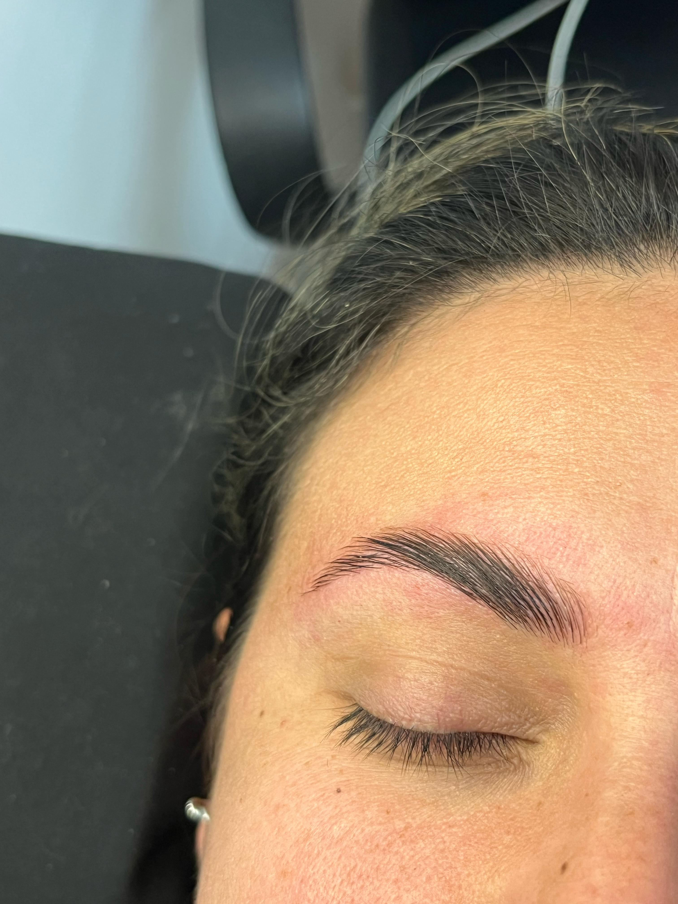

SERVICIO DE PESTAÑAS
CLASICAS: Una extension por cada pestaña, logra un acabado simple y delicado, Ideal si buscas un set sencillo o es tu primera aplicación

FOXY EYES: Una extensión tecnologica por cada pestaña natural. Logra un acabado intenso y un efecto "inclinado"

FOXY EYES INTENSE: Se utilizan extensiones de diferentes medidas para crear un efecto esponjoso. Logra un acabado intenso, voluminoso y un efecto "inclinado"

SERVICIO DE RETIRO
RETIRO: Se cobra el retiro de las extensiones cuando no se va a realizar mas o cuando son de otro lugar

SERVICIO DE CEJAS
LIFTING: Consiste en alisar y fijar tus cejas, de esta manera se mantienten sin "despeinarse" y se ven prolijas. Ideal para cejas rebeldes
DISEÑO Y PERFILADO: Evaluando tu tipo de rostro, se busca un diseño o "forma" de ceja que te favoresca y resalte tus facciones. Podes incluir tinte en caso de que quieras realzar el color.

SERVICIO DE TRENZAS
¡Acá no tenemos limites! Podes traer ideas, fotos inspiracionales o un peinado en particular
Ademas de el peinado, te asesoro sobre como cuidarlas correctamente
Los servicios de trenzas son personalizados